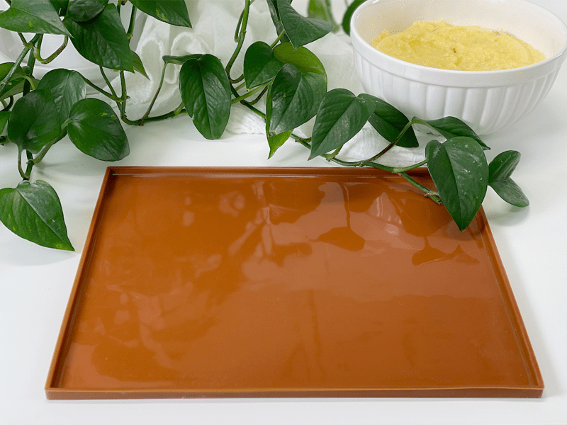
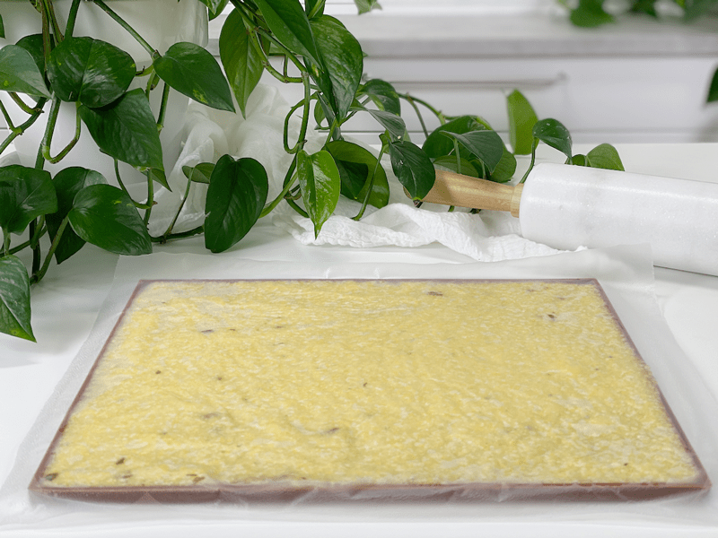
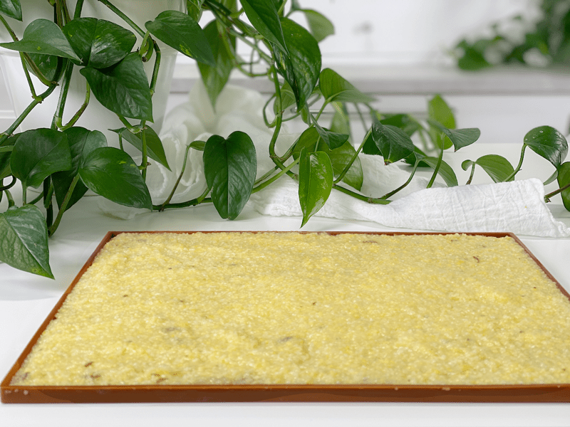
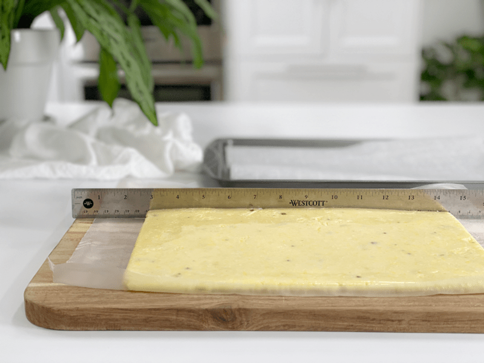
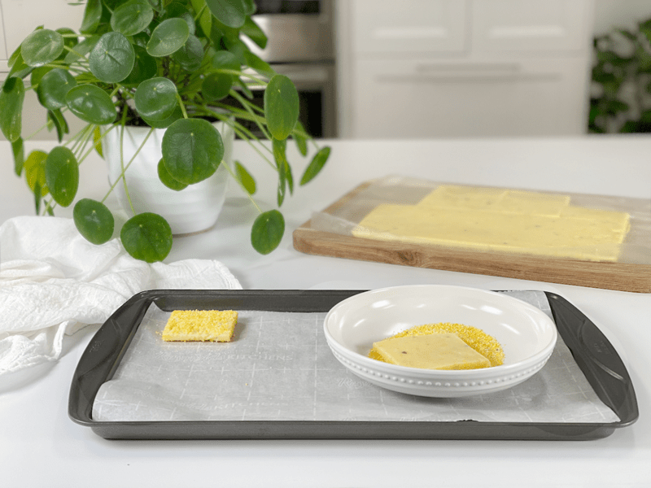
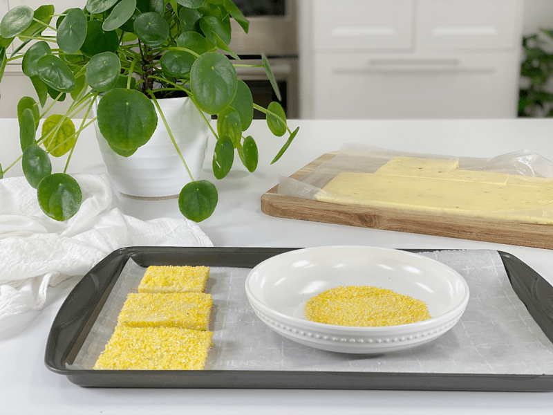
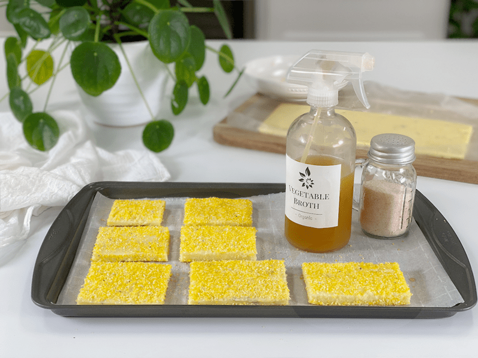
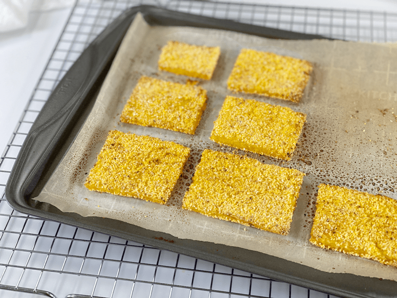
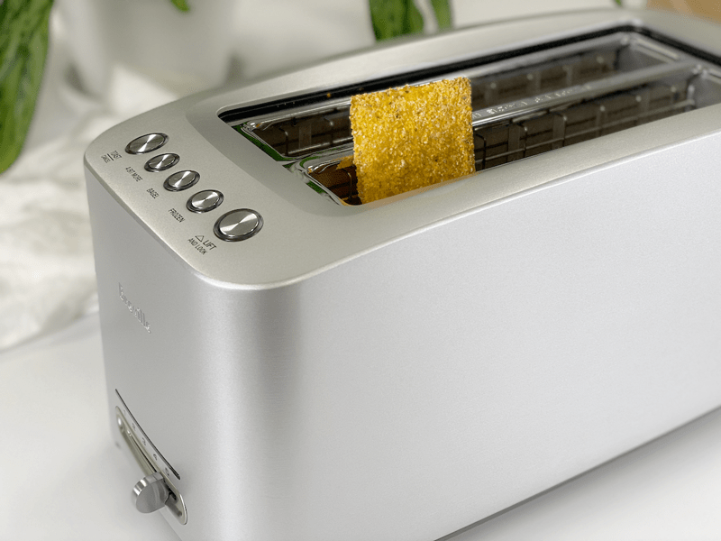

Baked Polenta Flatbread | Oil-Free
Today, I created a flatbread out of polenta and not much else. To achieve this, I used a few techniques that I had hidden up my sleeve. So what can you expect from this gluten-free, vegan, flour-free, nut-free, simple recipe? You can expect this bread to have a crunchy exterior with a soft inside. It can hold up to a good dunking in a thick, warm bowl of soup (self-tested). It is filling, satisfying, and has a slight corn flavor to it.

I am using the term “flatbread” loosely, because there is nothing doughy or yeasty here. In fact, it could not be simpler. Yesterday, I made a large pot of End of the Week Soup and I am looking forward to having a bowl today for lunch. When I eat soup, I always want “something” to eat alongside it. I grew up eating Campbell’s soup with either buttered crackers or a slice of white Wonder bread. As I spoon my soup into my mouth, my other hand feels empty, lonely…it needs to be holding something! So, I thought that I would try making a polenta-based “bread” to eat with it. That way, no hand would feel left out of the eating experience.
If you have been reading through my cooked recipes, you might have picked up that I enjoy batch cooking. Not only does it save money and time throughout the week, but it also opens up my creativity and makes me want to play with my food. So, that’s exactly what I did this morning. Baked Polenta Flatbread was born.
Ingredients Used and Why
The ingredients don’t need an introduction, but I like to explain the reasoning behind ingredients and techniques. I am not cooking with oil these days (as you will notice when you browse through my cooked recipes) so I have to get creative when aiming for a particular outcome. So, here goes….
Italian Corn Porridge
- Italian cornmeal is also known as polenta. As you may already know, it is best to eat organic, NON-GMO corn for the health of our bodies.
- Polenta, when chilled, sets up firm, which got me to thinking about making some sort of flatbread out of it.
Dried Polenta
- The ingredient list, calls for roughly 1 cup of dry polenta. This is used as the coating for the bread. It sounds strange to coat polenta with polenta, but I have my reasons. Most importantly…it creates that crunchy texture that I was aiming for.
Vegetable Broth
- Hmmm, vegetable broth in a spray bottle? Amie Sue, you are so weird. First off, I agree. Vegetable broth in a spray bottle is something I use a lot when baking or frying without oil. It adds a layer of flavor and helps to brown things while baking. The reason I put it in a spray bottle is to make it super easy to coat the food with it. I keep the bottle in the fridge and use it throughout the week.
Sea Salt | Spices
- I made my flatbread with salt only. I love the subtle flavor of polenta and I didn’t want to lose that in this flatbread. However, don’t let that hinder your creative juices. Add whatever spice profile you enjoy. When it comes to salt, I recommend adding that only when you are ready to slide the baking tray into the oven. I found that when I added the salt to the dry polenta, the salt didn’t stay dispersed and created salty “pockets” on the bread.
Ingredient Measurements
To be honest, I really don’t have measurements for this recipe, because it’s all going to depend on how much you want to make. Don’t let that stress you out…this is a simple recipe. When you make the Italian Corn Porridge (link down below) it will yield 4 cups of porridge. So after making it, divide it up so you can use it several applications (think meal prep). Set aside a few portions for breakfast, maybe make some fries or croutons from some of it…then create your flatbread.
How to Enjoy This Flatbread
Honestly, I don’t think we need to dig deep for ideas. It can be enjoyed all by itself, served alongside a bowl of soup, pasta, or whatever you are having for your main meal. It’s amazing with darn near any vegan cheese–click (here) for ideas. If you have leftovers, they will soften just a little bit, so if you want that crunch factor back, pop the flatbread in the toaster! Perfecto!
 Ingredients
Ingredients
Preparation
- Pour the porridge into a shallow baking tray that has a lip all around the edges, about 1/4″ thick.
- The size of the pan you use is up to your personal needs. The larger the pan, the more you can make.
- Once it is spread smooth and evenly, press a piece of plastic wrap directly on top of the polenta.
- Doing this will prevent a skin from forming on the top layer of the polenta.
- Slip into the fridge for several hours or overnight.
- When the polenta chills, it firms up so you can cut and handle it without it falling apart.
- You can make this days in advance, as it will keep for 5-7 days in the fridge.
Baking Method
- Preheat the oven to 400 degrees (F) and line a baking pan with parchment paper.
- Remove the firmed-up polenta from the fridge, peel back the plastic covering, and using a butter knife, cut the flatbread to the size you want.
- In a small flat container (large enough to lay a piece of the bread in) place about a cup’s worth of dried polenta, along with any spices that might tickle your tastebuds. I left mine plain.
- You might need more or less dried polenta depending on how much “bread” you are making.
- If you wish to add herbs to the dry mix, don’t use fresh, as they will just burn while baking.
- Remove the flatbread slices and coat both sides with the dry polenta, then lay them on the lined baking pan.
- Don’t skip this part, because the dried polenta helps create that crunchy exterior.
- Repeat the process until the desired amount of flatbread is made.
- Spritz the tops with a good coating of vegetable broth and sprinkle with salt.
- Slide into the oven and bake for 20 minutes.
- Remove the pan, flip each flatbread over, spritz with vegetable broth, and slide back in to bake for another 20-30 minutes.
- They won’t turn too brown; it’s just the nature of the ingredients, since we are not adding oil.
- Enjoy right away for the full crunch factor. If the pieces sit for hours, they will soften a little bit, but I have a remedy for that. You can still enjoy as-is or you can pop into the toaster, which is heavenly. Keep an eye on the toaster for the first piece you toast, since all machines run at different temperatures. You don’t want it to burn.
-

-
Have the mold ready to go.
-

-
Pour the porridge into the mold and cover with plastic wrap.
-

-
Once firm, remove the plastic wrap.
-

-
Cut into desired sizes and shapes. I used my trusty metal ruler to cut it with.
-

-
Coat each piece with the dry polenta.
-

-
Place on the lined baking sheet.
-

-
Spray with vegetable oil and sprinkle salt on top.
-

-
Flip halfway through the baking cycle and spritz the other side with broth.
-

-
If the flatbread softens too much for your liking… pop into the toaster!
© AmieSue.com